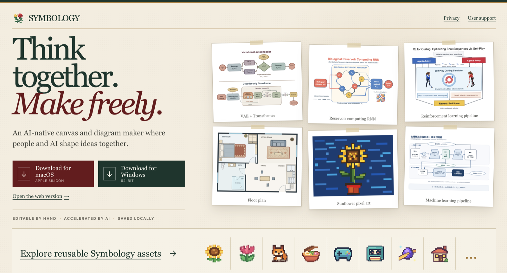

Hantao Zhang 张涵韬
Journey
- 2026–Present Gatsby Computational Neuroscience Unit
- 2024–2025 Yale University Statistics and Data Science
- 2021–2024 University of Warwick Mathematics, Operational Research, Statistics and Economics (MORSE)
- 2018–2021 Beijing No. 4 High School
Research
I am interested in how biological systems learn, represent, and reason—and how those principles can inform machine intelligence.
Currently building
An AI-native canvas and diagram maker where people and AI shape ideas together.
